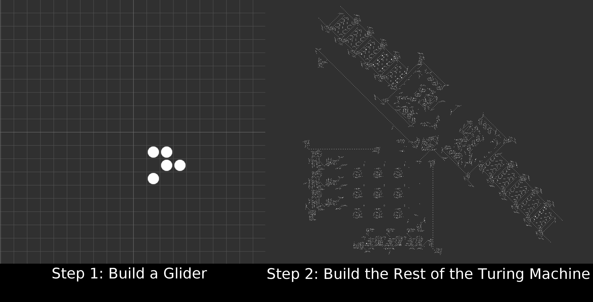

How to compute anything in Life

The reflex glider and a Turing machine (`Turing-Machine-3-state.rle`) in Golly. The Turing machine is (I believe) based on work from Paul Rendelli (2000)
- Early universality sketches by Wainwright (1974) and Winning Ways authors (E. R. Berlekamp, J. H. Conway, R. K. Guy. Academic Press 1982 [vol. 4, Ch 25, pp. 940 to 957 in 2nd edition, 2004])